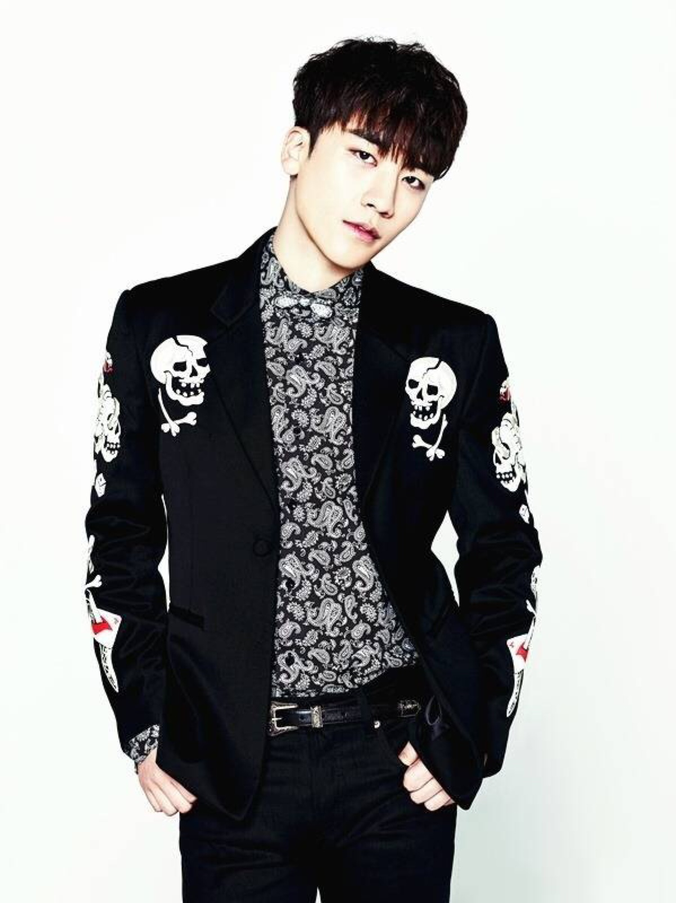

SeungRi
Lee Seung-hyun (born December 12, 1990),[1] better known by his stage name Seungri (Hangul: 승리, Victory), is a South Korean singer-songwriter and actor. Seungri debuted in 2006 with the boy band Big Bang under YG Entertainment before embarking on a solo career, adopting the stage name of V.I when performing in Japan.
His first extended play, VVIP (2011), yielded two singles: "VVIP" and "What Can I Do." The latter peaked at number seven on the Gaon chart, and the album sold over 44,000 copies. His second Korean EP Let's Talk About Love (2013) fared better and was supported by "Gotta Talk to You" (Korean: 할말 있어요, Revised Romanization: Na Jigeum Halmal Isseoyo), which charted at number three on the Gaon chart. The EP was later re-released in Japan as his first full Japanese studio album, containing previous materials from the two EPs recorded in the country's native language.
Seungri also ventured into acting, first in the musical Sonagi (2008) before appearing in films such as Nineteen and Why Did You Come to Our Home? (both released in 2009). He branched into television drama with the Japanese Nihon TV special drama Kindaichi Shonen no Jikenbo (2013) and the South Korean television drama Angel Eyes (2014). Seungri have also MC for and participated in several variety shows.
